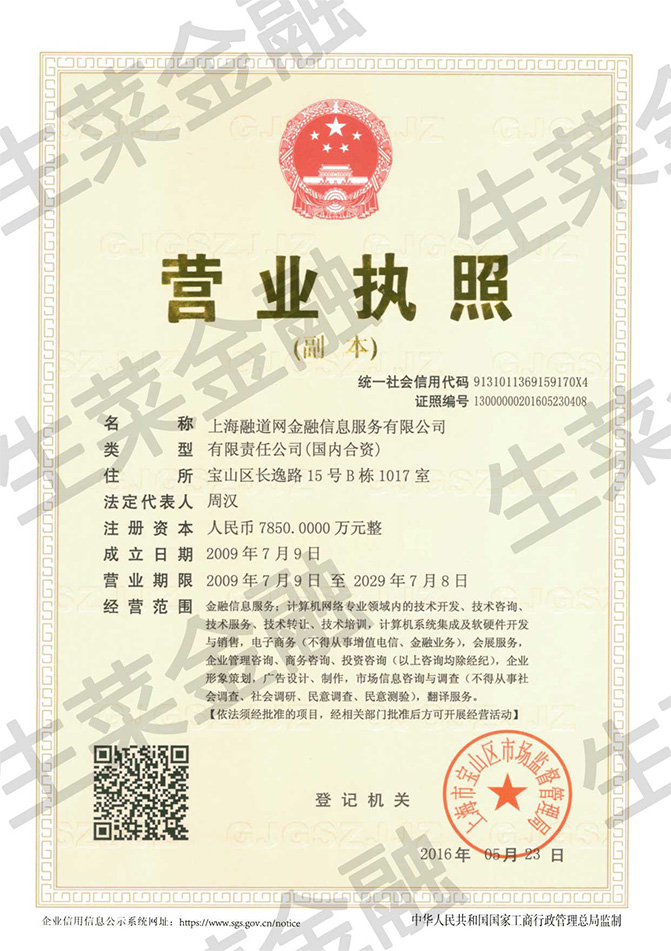

<!-- 首页-国资背景/资金安全/灵活变现/高收益 -->
<script type='text/ng-template' id='summary.html'>
	<header class='header clearfix'>
		<span class='th'>{{title}}</span>
		<a class='header-l back'><i class='icon-fangxiangzuo iconfont'></i></a>
	</header>
	<article class='wap-main'>
		<div class='main-con pb-20'>
			<!-- 国资背景 -->
			<div class='planDetails'  ng-show='type==1'>
		        <h3 class="content"><em class="fc-orange">上海科技创业投资有限公司</em></h3>
		        <p class="content ">
		          上海科技创业投资有限公司原名“上海科技投资公司”。 上海科技投资公司是上海最早专业从事科技产业化的风险投资企业，1992年由上海市政府出资设立。2014年8月18日，上海科技投资公司与上海创业投资有限公司实施重组成立上海科技创业投资（集团）有限公司，注册资本16.9亿元，直接受托管理的政府资金达120亿元,拥有创业风险投资平台、引导基金管理平台、政府项目出资平台、科技金融服务平台四大功能性平台，是上海乃至全国历史最长、规模最大、功能最全的国有创业投资机构之一，肩负着推进上海战略性新兴产业转型升级和建设具有全球影响力的“科技创新中心”的重要使命。 上海科技创业投资有限公司是融道网公司的第一大法人股东。
		        </p>
		        <h3 class="content mt-10"><em class="fc-orange">上海汽车集团股权投资有限公司</em></h3>
		        <p class="content ">
		          上海汽车集团股权投资有限公司（简称“上汽投资”）成立于2011年5月6日，注册资本33亿元。上汽投资是上海汽车集团股份有限公司的全资子公司。上汽集团是国内最大的汽车类上市公司和汽车生产商，2015年世界500强排名第60位。上汽投资定位于上汽集团国内专业投资平台，具体业务包括汽车产业链上下游的中长期股权投资、汽车产业以外的中短期投资及其他以财务收益为目标的短期投资。截至2015年底，上汽投资资金管理规模达90亿元。 上海汽车集团股权投资有限公司通过旗下基金——上海尚颀德连投资中心（有限合伙）持有融道网公司股份，是公司的第二大法人股东。
		        </p>
		        <h3 class="content mt-10"><em class="fc-orange">上海仪电控股（集团）公司</em></h3>
		        <p class="content ">
		            上海仪电控股（集团）公司是经上海市人民政府批准，接受上海市国有资产监督管理委员会授权的国有资产经营公司。上海云赛创业投资有限公司成立于2013年8月，是上海仪电（集团）有限公司旗下专注于中早期项目的产业基金，该基金首期规模3亿元人民币，主要聚焦于云计算、物联网、"信息化、网络化、智能化"的电子产品及解决方案，以及信息技术衍生的新兴产业。 上海仪电控股（集团）公司通过旗下上海云赛创业投资有限公司持有融道网公司股份。
		        </p>

		        <h3 class="content mt-10"><em class="fc-orange">国资派驻融道网公司董事</em></h3>
		        <h4 class="fc-3 mt-5 line-h20 fs-12">童跃农--上海科技创业投资(集团)有限公司科技金融部经理，上海科技创业投资有限公司总经理助理</h4>
		        <p class="content mt-5">
		            曾任中国纺织机械股份有限公司技术处长、机械厂厂长职务；1998 年 6 月至今任职上海科技创业投资有限公司，并担任上海中新技术创业投资有限公司总经理、上海汇科创业投资有限公司总经理、上海松科创业投资管理有限公司总经理、上海明浦科技发展有限公司总经理、上海康迪特创业投资管理有限公司副董事长等职务。
		        </p>
		        <h4 class="fc-3 mt-5 line-h20 fs-12">陈欣--上海科技创业投资（集团）有限公司科技金融部副总经理</h4>
		        <p class="content mt-5">
		            华东师范大学国际金融专业本科毕业。曾任上海新绩成进出口贸易有限公司新能源项目部经理，上海张江投资创业股份有限公司市场部高级经理，上海张江企业孵化器经营管理有限公司企业发展部总经理助理。
		        </p>

		        <h4 class="fc-3 mt-5 line-h20 fs-12">巫建军--上海尚颀投资管理合伙企业（有限合伙）执行董事</h4>
		        <p class="content mt-5">
		            华东师范大学国际金融专业本科毕业。曾任上海新绩成进出口贸易有限公司新能源项目部经理，上海张江投资创业股份有限公司市场部高级经理，上海张江企业孵化器经营管理有限公司企业发展部总经理助理。
		        </p>

		        <h3 class="content mt-10"><em class="fc-orange">国资派驻监事</em></h3>
		        <h4 class="fc-3 mt-5 line-h20 fs-12">监事长 潘政--上海科技创业投资(集团)有限公司副总经理、上海科技创业投资有限公司副总经理</h4>
		        <p class="content ">
		          曾任上海七一一研究所副所长、上海科学技术协会副主席、上海科技馆馆长；2010 年 2 月至今担任上海科技投资公司副总经理，上海科技创业投资(集团)有限公司副总经理。
		        </p>
		        <h4 class="fc-3 mt-5 line-h20 fs-12">监事 朱琦--上海仪电集团旗下上海云赛创业投资有限公司风控主管</h4>
		        <p class="content ">
		          哈尔滨工业大学技术经济学士，上海财经大学货币银行学硕士。曾任上海海欣集团股份有限公司战略投资部副总监，东方有线网络有限公司财务部总经理助理，上海青浦东方有线有限公司副总经理。
		        </p>

		        <h3 class="content mt-10"><em class="fc-orange">国资派驻风控委员会成员</em></h3>
		        <h4 class="fc-3 mt-5 line-h20 fs-12">江金乾--上海汽车集团股权投资有限公司风控部高级审计经理</h4>
		        <p class="content ">
		          南京大学学士，曾任南通会计师事务所副主任会计师，安永大华会计师事务所高级审计经理，上海联明投资集团有限公司财务总监，上海联明机械股份有限公司副总经理，上海华燕置业发展有限公司财务总监。
		        </p>
		    </div>

			<!-- 保护计划 -->
			<div class='planDetails'  ng-show='type==2'>
		        <h2 class="th"> 什么是融道网·生菜金融投资人保护计划？</h2>
		        <p class="content">“融道网·生菜金融投资人保护计划”是上海融道网金融信息服务有限公司（以下称“融道网”），运营融道网·生菜金融网站【域名：shengcaijinrong.com，以下简称“融道网·生菜金融”】，融道网·生菜金融平台为充分保障“融道网·生菜金融”全体出借人的共同权益而建立的风险共担机制。平台的所有出借人经过平台身份认证后，在“融道网·生菜金融”的投资行为100%适用于投资人保护计划，无需为此支付任何费用。 “融道网·生菜金融投资人保护计划”为出借人提供了有效的风险共担机制，分散了出借人投资行为所带来的风险，营造了一个安全健康的投资环境，保障了出借人的权益。</p>

		        <h2 class="th mt-15"> 风险准备金账户规则</h2>
		        <p class="content">“风险准备金账户”是指“融道网·生菜金融”平台为所服务的所有出借人的共同利益考虑，以上海融道网金融信息服务有限公司名义单独开设并由银行进行资金监管的一个专款专用账户，服务于融道网·生菜金融及各子平台资金出借人的投资人保护计划。</p>
		        <h3 class="th th-2">(一)“风险准备金账户”资金来源</h3>
		        <p class="font14 line-h22">“风险准备金账户”资金来源主要是由两部分组成：</p>
		        <p class="content">1.上海融道网金融信息服务有限公司一次性注入￥6,000,000（人民币陆佰万元整）作为初始风险准备金。</p>
		        <p class="content">2.从每单业务的服务费中计提，具体的计提比例如下：
		          100万以上标的计提标准=合同总借款金额×0.3‰×期数
		          当遇到以下情况需要及时调准计提比例：风险准备金拨备率≦2.5%时，按合同金额×0.8‰×期数。<br>100万以下标的计提标准=合同总借款金额×0.2%×期数
		          当遇到以下情况需要及时调准计提比例：风险准备金拨备率≦2.5%时，按合同金额×0.6%×期数。</p>
		        <h2 class="th th-2"> (二) “风险准备金账户”拨备主要指标</h2>
		        <p class="content">“风险准备金账户”资金将专门用于在一定限额内补偿融道网·生菜金融平台所服务的出借人（债权人）由于借款人或保证人（债务人）的违约所遭受的本金或本息的损失。即当借款人（债务人）超出约定时间（一般为超过30个自然日）还款时，平台将按照“风险准备金账户资金使用规则”从该账户中提取相应资金用于补偿出借人（债权人）应收取的本金或本息金额（以下统一简称“逾期应收补偿金额”）。</p>
		        <h2 class="th th-2">(三) “风险准备金账户”资金用途</h2>
		        <p class="content">“风险准备金账户”资金将专门用于在一定限额内补偿融道网·生菜金融平台所服务的出借人（债权人）由于借款人或保证人（债务人）的违约所遭受的本金或本息的损失。即当借款人（债务人）超出约定时间（一般为超过30个自然日）还款时，平台将按照“风险准备金账户资金使用规则”从该账户中提取相应资金用于补偿出借人（债权人）应收取的本金或本息金额（以下统一简称“逾期应收补偿金额”）。</p>
		        <h2 class="th th-2">(四)“风险准备金账户”资金使用规则</h2>
		        <p class="font14 line-h22">1.违约补偿规则</p>
		        <p class="content">当借款人（债务人）超出约定时间（一般为超过30日）还款时方从“风险准备金账户”的资金中抽取相应资金补偿出借人（债权人）逾期应收补偿金额。</p>
		        <p class="font14 line-h22">2.时间优先规则</p>
		        <p class="content">“风险准备金账户”的资金对出借人（债权人）逾期应收补偿金额的补偿按照该债权发生的时间先后顺序进行补偿分配。先补偿时间发生在前的债权，后补偿时间发生在后的债权。</p>
		        <p class="font14 line-h22">3.债权比例规则</p>
		        <p class="content">“风险准备金账户”资金对同一借款协议下的不同出借人（债权人）逾期应收补偿金额的补偿，原则上按照各债权金额占同一协议内发生的债权总额的比例进行分配。</p>
		        <p class="content">若“风险准备金账户”资金当期余额不足以支付当期（以“自然月”为单位）所有应享受该账户的出借人所对应的逾期补偿金额时，则当期应享受该账户的出借人按照各自对应的逾期应收补偿金额占当期所有出借人对应的逾期应收补偿总额的比例进行分配。</p>

		        <p class="font14 line-h22">4.有限补偿规则</p>
		        <p class="content">“风险准备金账户”资金对出借人（债权人）逾期应收补偿以该账户的资金总额为限。 当该账户余额为零时，自动停止对出借人逾期应收补偿金额的支付，直到该账户获得新的风险准备金。</p>

		        <p class="font14 line-h22">5.收益转移规则</p>
		        <p class="content">当出借人享有了“风险准备金账户”对某笔逾期债权补偿金额的足额补偿后，则该债权对应的借款人其后为该笔债权所偿还的本息、利息以及罚息均直接归属“融道网·生菜金融•风险准备金账户”。如该债权存在抵押、质押及其他担保的，则平台代借款人处置担保物的所得等也直接归属“融道网·生菜金融•风险准备金账户”</p>

		        <p class="font14 line-h22">6.金额上限规则</p>
		        <p class="content">当“风险准备金账户”内的金额超过于平台上当时所有债权本息金额的3%时，融道网有权将超出部分转出该账户，转出部分归融道网所有。</p>
		       
		       <h2 class="th th-2">(五)“风险准备金账户”资金管理规则</h2>
		       <p class="content">银行将对“风险准备金账户”专项账户资金进行认真、独立的资金监管。于银行监管期间产生的所有利息收入均一并纳入“风险准备金账户”所有。</p>

		       <h2 class="th th-2">(六)“风险准备金账户”拨备操作流程</h2>
		       <p class="content">1.财务部：财务部每月底根据一月实际业务情况发生的服务费，拨备相应的数额的风险准备金，并存入监管银行账户。</p>
		       <p class="content">2.贷后管理：贷后管理系统自动计算上述三项指标，及时预警。</p>
		    </div>

			<!-- 平台收益 -->
			<div class='' ng-show='type==3'>
				<!--<p class="font14 line-h20">年化收益：<em class="fc-orange">6%-9.90%</em></p>
          		<p class="font14 line-h20">投资期限：<em class="fc-orange">1个月--24个月</em></p>
          		<p class="content">可转让：支持 <em class="fc-orange">T+0 </em>即债权合同生效当天即可转让投资保障：机构提供<em class="fc-orange">100%</em>本息担保+融道网 生菜金融《投资人保护计划》</p>-->
          		<div class='shouyi-table pt-10'>
	                <table>
	                    <tbody>
	                        <tr>
	                           <th>比比看</th>
	                           <td class='td2'>生菜金融</td>
	                           <td>某宝</td>
	                           <td>银行活期存储</td>
	                           <td>银行定期</td>
	                        </tr>
	                        <tr class="bg_f90">
	                           <th>预期年化收益率</th>
	                           <td class='td2'>8%</td>
	                           <td>2.43%</td>
	                           <td>0.35%</td>
	                           <td>1.5%</td>
	                        </tr>
	                        <tr>
	                            <th>灵活性</th>
	                            <td class='td2'>最快当日到</td>
	                            <td>2小时内到账</td>
	                            <td>随时到账</td>
	                            <td>到期可取</td>
	                        </tr>
	                        <tr>
	                            <th>起投金额</th>
	                            <td class='td2'>1分</td>
	                            <td>1分</td>
	                            <td>1分</td>
	                            <td>50元</td>
	                        </tr>
	                        <tr>
	                            <th>安全性</th>
	                            <td class='td2'>投资人保护计划100%保护资金安全</td>
	                            <td>低风险</td>
	                            <td>无风险</td>
	                            <td>无风险</td>
	                        </tr>
	                    </tbody>
	                </table>  
	          </div>
	          <div class='clearfix shou-box'>
	            <div class='sy-list'>
	                <div class='item'>
	                    <h3>高收益理财</h3>
	                    <p class='p1'>年化收益</p>
	                    <p class='num'><em>9.90</em>%</p>
	                    <p class='time'>（24个月）</p>
	                </div>
	            </div>
	             <div class='sy-list sy2'>
	                <div class='item'>
	                    <h3>短期理财</h3>
	                    <p class='p1'>年化收益</p>
	                    <p class='num'><em>7.23</em>%</p>
	                    <p class='time'>（1个月）</p>
	               </div>
	            </div>
	             <div class='sy-list'>
	                <div class='item'>
	                    <h3>天天生财</h3>
	                    <p class='p1'>年化收益</p>
	                    <p class='num'><em>6-6.5</em>%</p>
	                    <p class='time'>（随存随取）</p>
	              </div>
	            </div>
	          </div>
			</div>	

			<!-- 资金安全 -->
			<div class='planDetails' ng-show='type==4'>
		        <h3 class="content"><em class="fc-orange">投资人保护计划</em></h3>
		        <p class="content ">
		          “融道网·生菜金融投资人保护计划”是融道网·生菜金融平台为充分保障“融道网·生菜金融”全体出借人的共同权益而建立的风险共担机制。平台的所有出借人经过平台身份认证后，在“融道网·生菜金融”的投资行为100%适用于投资人保护计划，无需为此支付任何费用。 “融道网·生菜金融投资人保护计划”为出借人提供了有效的风险共担机制，分散了出借人投资行为所带来的风险，营造了一个安全健康的投资环境，保障了出借人的权益。
		        </p>

		        <h3 class="content mt-10"><em class="fc-orange">投监会</em></h3>
		        <p class="content ">
		          投监会全称为融道网·生菜金融投资人监督管理委员会，是融道网·生菜金融平台主动倡导，由投资人积极发起并自愿成立、实行自我管理的非营利性群众组织。投监会旨在通过对融道网·生菜金融平台（其运营主体为上海融道网金融信息服务有限公司，以下简称“平台”）的产品、服务等实施有效监督、对借款标的进行现场检查等措施，推动平台信息公开透明、平台运营主体合法合规诚信经营，从而最终达到保护投资人合法权益的目的。
		        </p>
		        <h3 class="content mt-10"><em class="fc-orange">账户安全机制</em></h3>
		        <p class="content ">
		            “融道网·生菜金融”为积极响应和落实银监会同工业和信息化部、公安部、国家互联网信息办公室起草发布的《网络借贷信息中介机构业务活动管理暂行办法（征求意见稿）》的指导意见，同时为用户提供更加高效、安全的财富管理服务，采用了国内最为规范的资金安全模式，实现了平台运营与客户资金转移严格隔离的安全方式。
		        </p>
		        <h3 class="content mt-10"><em class="fc-orange">风险储备金</em></h3>
		        <p class="content ">
		            针对每笔借款根据服务类型及借款人的信用等级计提一定比例的风险准备金。银行对计提的风险准备金进行专户监管。用于借款人还款坏账的“风险备付”，进一步有效降低投资人的投资风险。
		        </p>
		    </div>		

		    <!-- 平台介绍 -->	
		    <div class='planDetails' ng-show='type==5'>	
		    	<p class="content">融道网诞生于2009年7月，是国内最早的互联网金融平台，其创立的初衷是提升全社会特别是小微企业资金融通效率、降低融资成本，破解融资难、融资贵，是国内最早的以互联网方式践行普惠金融的专业服务平台之一。</p>
		        <p class="content">融道网及旗下生菜金融平台的运营主体均是上海融道网金融信息服务有限公司。融道网公司于2014年8月、2015年12月先后两次获得上海市国资委直属的三大国企巨头战略投资，它们是：上海科技创业投资有限公司、上海汽车集团股权投资有限公司以及上海仪电（集团）有限公司旗下基金。</p>
		        <p class="content">生菜金融因而成为国资背景的互联网理财平台，致力于为人民大众提供安心、稳健、便捷、低门槛、高收益的理财服务。</p>
		        <div class="mt-20"></div>
		    </div>

		    <!-- 规范运营 -->	
		    <div class='planDetails' ng-show='type==6'>	
		    	<h3 class="content"><em class="fc-orange">1、严守政策：</em></h3>
		        <p class="content ">
		            融道网·生菜金融作为国资理财平台，自觉严格遵守国家金融监管法律法规，及地方政府出台的各项规章制度，致力于打造规范化、阳光化的社会金融服务平台。
		        </p>

		        <h3 class="content mt-10"><em class="fc-orange">2、双重审核：</em></h3>
		        <p class="content ">
		          平台采用担保公司尽职调查、风控评级，加上平台的风控调查，双重审核，来严格控制每一笔融资的安全性。
		        </p>
		        <h3 class="content mt-10"><em class="fc-orange">3、投监会：</em></h3>
		        <p class="content ">
		            投监会由生菜金融平台主动倡导，旨在对平台的产品、服务等实施有效监督、对借款标的进行现场检查等措施，推动平台信息公开透明、平台运营主体合法合规诚信经营，从而最终达到保护投资人合法权益的目的。
		        </p>
		        <h3 class="content mt-10"><em class="fc-orange">4、资金保障：</em></h3>
		        <p class="content ">
		            “融道网·生菜金融”为积极响应和落实银监会、工业和信息化部、公安部、国家互联网信息办公室起草发布的《网络借贷信息中介机构业务活动管理暂行办法（征求意见稿）》的指导意见，全面推出“账户升级”服务，实现平台与客户资金严格隔离的安全方式，致力于为用户提供更加高效、安全的财富管理服务。
		        </p>
		    </div>

		    <!-- 服务协议 -->
		    <div class='planDetails' ng-show='type==7'>	
		    	<h2 class="th"><em class="fc-orange">服务协议</em></h2>
		    	<p class="content">“融道网·生菜金融”网站（www.shengcaijinrong.com）由上海融道网金融信息服务有限公司负责运营（以下本网站均指网站及上海融道网金融信息服务有限公司）在您注册成为本网站用户前请务必仔细阅读以下条款。若您一旦注册，则您接受本网站的服务必须受以下条款的约束。若您不接受以下条款，请立即离开本网站。</p>
		    	<p class="content">您确认本服务协议后，本服务协议即在您和本网站之间产生法律效力。您只要点击协议正本下方的“确认”按钮并按照本网站规定的注册程序成功注册为用户，您的行为既表示同意并签署了本服务协议。本服务协议不涉及您与本网站的其他用户之间因网上交易而产生的法律关系及法律纠纷，但您在此同意将全面接受和履行与本网站其他用户在本网站签订的任何电子法律文本，并承诺按该法律文本享有和/或放弃相应的权利、承担和/或豁免相应的义务。</p>
		    	<p class="content">本服务协议内容包括以下条款及已经发布的或将来可能发布的各类规则。所有规则为协议不可分割的一部分，与协议正文具有同等法律效力。本协议是由您与本网站共同签订的，适用于您在本网站的全部活动。在您注册成为用户时，您已经阅读、理解并接受本协议的全部条款及各类规则，并承诺遵守中国现行的法律、法规、规章及其他政府规定，如有违反而导致任何法律后果的发生，您将以自己的名义独立承担所有相应的法律责任。</p>
		    	<p class="content">本网站有权根据需要不时地制定、修改本协议或各类规则，如本协议及规则有任何变更，一切变更以本网站最新公布条例为准。您应不时地注意本协议及附属规则地变更，若您不同意相关变更，本网站有权不经任何告知终止、中止本协议或者限制您进入本网站的全部或者部分板块且不承担任何法律责任。但该终止、中止或限制行为并不能豁免您在本网站已经进行的交易下所应承担的义务。</p>
		    	<h3 class="content mt-10"><em class="fc-orange">一、使用限制</em></h3>
		    	<p class="content">本网站中的全部内容的版权均属于本网站所有，该等内容包括但不限于文本、数据、文章、设计、源代码、软件、图片、照片及其他全部信息（以下称“网站内容”）。网站内容受中华人民共和国著作权法及各国际版权公约的保护。未经本网站事先书面同意，您承诺不以任何方式、不以任何形式复制、模仿、传播、出版、公布、展示网站内容，包括但不限于电子的、机械的、复印的、录音录像的方式和形式等。您承认网站内容是属于本网站的财产。未经本网站书面同意，您亦不得将本网站包含的资料等任何内容镜像到任何其他网站或者服务器。任何未经授权对网站内容的使用均属于违法行为，本网站将追究您的法律责任。</p>
		    	<p class="content">您承诺合法使用本网站提供的服务及网站内容。禁止在本网站从事任何可能违反中国现行的法律、法规、规章和政府规范性文件的行为或者任何未经授权使用本网站的行为，如擅自进入本网站的未公开的系统、不正当的使用密码和网站的任何内容等。本网站只接受持有中国大陆有效身份证的（不包括香港特区、澳门特区及台湾地区）的18周岁以上的具有完全民事行为能力的自然人及在中国大陆地区合法注册的机构成为网站用户。如您不符合资格，请勿注册。本网站保留随时中止或终止您用户资格的权利。您注册成功后，不得将本网站的用户名转让给第三方或者授权给第三方使用。您确认，您用您的用户名和密码登录本网站后在本网站的一切行为均代表您并由您承担相应的法律后果。</p>
		    	<p class="content">您有义务在注册时提供自己的真实资料，并保证诸如电子邮件地址、联系电话、联系地址、邮政编码等内容的有效性及安全性。如您因网上交易与其他用户产生诉讼的，其他用户有权通过司法部门要求网站提供相关资料。</p>
		    	<p class="content">经国家生效法律文书或行政处罚决定确认您存在违法行为，或者本网站有足够事实依据可以认定您存在违法或违反本服务协议的行为的或者您借款逾期未还的，本网站有权在本网站及互联网络上公布您的违法、违约行为，并有关将该内容记入任何与您相关的信用资料和档案。</p>

		    	<h3 class="content mt-10"><em class="fc-orange">二、涉及第三方网站</em></h3>
		    	<p class="content">本网站不能保证也没有义务保证第三方网站上的信息的真实性和有效性。您应按照第三方网站的服务协议使用第三方网站，而不是按照本协议。第三方网站的内容、产品、广告和其他任何信息均由您自行判断并承担风险，而与本网站无关。</p>

		    	<h3 class="content mt-10"><em class="fc-orange">三、网站内容监测</em></h3>
		    	<p class="content">本网站没有义务监测网站内容，但是您确认并同意本网站有权不时地根据法律、法规、政府要求透露、修改或者删除必要的、合适的信息，以便更好地运营本网站并保护自身及本网站的其他合法用户。</p>

		    	<h3 class="content mt-10"><em class="fc-orange">四、个人信息的使用</em></h3>
		    	<p class="content">本网站对于您提供的、自行收集到的、经认证的个人信息将按照本网站的隐私规则予以保护、使用或者披露。当您作为借入人借款逾期未还时，作为借出人的其他用户可以采取发布您的个人信息的方式追索债权，但本网站对该等借出人的行为免责。</p>

		    	<h3 class="content mt-10"><em class="fc-orange">五、索赔</em></h3>
		    	<p class="content">由于您违反本协议或任何法律、法规或侵害第三方的权利，而引起第三方对本网站提出的任何形式的索赔、要求、诉讼。本网站有权向您追偿相关损失，包括但不限于本网站法律费用、名誉损失、及向第三方支付的补偿金等。</p>

		    	<h3 class="content mt-10"><em class="fc-orange">六、终止</em></h3>
		    	<p class="content">除非本网站终止本协议或者您申请终止本协议且经本网站同意，否则本协议始终有效。本网站有权在不通知您的情况下在任何时间终止本协议或者限制您使用本网站。但本网站的终止行为不能免除您根据本服务协议或在本网站生成的其他协议项下的还未履行完毕的义务。</p>

		    	<h3 class="content mt-10"><em class="fc-orange">七、适用法律和管辖</em></h3>
		    	<p class="content">因本网站提供服务所产生的争议均适用中华人民共和国法律，并由本网站住所地的人民法院管辖。</p>

		    	<h3 class="content mt-10"><em class="fc-orange">八、附加条款</em></h3>
		    	<p class="content">在本网站的某些部分或页面中可能存在除本协议以外的单独的附加服务条款，当这些条款存在冲突时，在该些部分和页面中附加条款优先适用。</p>

		    	<h3 class="content mt-10"><em class="fc-orange">九、纸质合同签署授权</em></h3>
		    	<p class="content">当相关投资项目的《借款-担保合同》、《借款合同》等纸质合同需要出借人签署时，出借人授权本网站工作人员代为在该《借款-担保合同》、《借款合同》纸质合同上签署出借人的名字，并确认代为签署出借人名字与出借人本人签署具有相同法律效力。</p>

		    	<h3 class="content mt-10"><em class="fc-orange">十、服务费用</em></h3>
		    	<p class="content">优先抵扣：您在本网站进行投融资（借款）交易时，根据您所签订的协议，若其中约定有本网站运营主体收取的各项服务费的，您无条件授权网站运营主体可优先从交易钱款中直接先行抵扣，费用抵扣完毕后再将剩余钱款支付给您。</p>
		    	<p class="content">优先抵扣：您在本网站进行投融资（借款）交易时，根据您所签订的协议，若其中约定有本网站运营主体收取的各项服务费的，您无条件授权网站运营主体可优先从交易钱款中直接先行抵扣，费用抵扣完毕后再将剩余钱款支付给您。</p>

		    	<h3 class="content mt-10"><em class="fc-orange">十一、条款的独立性</em></h3>
		    	<p class="content">若本协议的部分条款被认定为无效或者无法实施时，本协议中的其他条款仍然有效。</p>

		    	<h3 class="content mt-10"><em class="fc-orange">十二、有关著作权的投诉</em></h3>
		    	<p class="content">若您发现本网站中有侵犯您著作权的情形，你可以将投诉信发送：tousu#shengcaijinrong.com（填写的时候请把#改成@）</p>

		    	<h2 class="th"><em class="fc-orange">隐私条款</em></h2>
		    	<p class="content">以下是本网站（www.shengcaijinrong.com）及其运营公司上海融道网金融信息服务有限公司（以下合称“本网站”）的隐私规则。您成为本网站用户前务必仔细阅读本隐私规则并同意本隐私规则。作为本网站服务的正常操作程序的一部分，本网站收集、使用并（在一些情况下）向第三方披露有关您的资料。本隐私规则作为本网站服务协议的附件，在您注册成为本网站用户后立即生效，并对您及本网站产生约束力。</p>

		    	<h3 class="content mt-10"><em class="fc-orange">1. 用户身份限制</em></h3>
		    	<p class="content">未成年人（年龄18周岁以下人士）、限制行为能力人、中国大陆以外地区人士及自然人以外的组织无资格注册成为本网站用户并使用本网站的服务，本网站要求未成年人、中国大陆以外人士及各类组织不要向本网站提交任何个人资料。</p>

		    	<h3 class="content mt-10"><em class="fc-orange">2. 涉及的个人资料</em></h3>
		    	<p class="content">本网站收集个人资料的主要目的在于向您提供一个顺利、有效和度身订造的交易经历。本网站仅收集本网站认为就此目的及达成该目的所必须的关于您的个人资料。</p>
		    	<p class="content">本网站可能自公开及私人资料来源收集您的额外资料，以更好地了解本网站用户，并为其度身订造本网站服务、解决争议并有助确保在网站进行交易的安全性。</p>
		    	<p class="content">本网站按照您在本网站网址上的行为自动追踪关于您的某些资料。本网站利用这些资料进行有关本网站之用户的人口统计、兴趣及行为的内部研究，以更好地了解您以便向您和本网站的用户社区提供更好的服务。</p>
		    	<p class="content">本网站在本网站的某些网页上使用诸如“Cookies”的资料收集装置。“Cookies”是设置在您的硬盘上的小档案，以协助本网站为您提供度身订造的服务。本网站亦提供某些只能通过使用“Cookies”才可得到的功能。本网站还利用“Cookies”使您能够在某段期间内减少输入密码的次数。</p>
		    	<p class="content">“Cookies”还可以协助本网站提供专门针对您的兴趣而提供的资料。</p>
		    	<p class="content">如果您将个人通讯信息（例如：手机短信、电邮或信件）交付给本网站，或如果其他用户或第三方向本网站发出关于您在本网站上的活动或登录事项的通讯信息，本网站可以将这些资料收集在您的专门档案中。</p>

		    	<h3 class="content mt-10"><em class="fc-orange">3. 本网站对您的资料的使用</em></h3>
		    	<p class="content">您同意本网站可使用关于您的个人资料（包括但不限于本网站持有的有关您的档案中的资料，及本网站从您目前及以前在本网站上的活动所获取的其他资料）以解决争议、对纠纷进行调停、有助于确保在本网站进行安全交易，并执行本网站的用户协议。本网站有时候可能调查多个用户以识别问题或解决争议，特别是本网站可审查您的资料以区分使用多个用户名或别名的用户。为限制在网站上的欺诈、非法或其他刑事犯罪活动，使本网站免受其害，您同意本网站可通过人工或自动程序对您的个人资料进行评价。</p>
		    	<p class="content">您同意本网站可以使用您的个人资料以改进本网站的推广和促销工作、分析网站的使用率、改善本网站的内容和产品推广形式，并使本网站的网站内容、设计和服务更能符合用户的要求。这些使用能改善本网站的网页，以调整本网站的网页使其更能符合您的需求，从而使您在使用本网站服务时得到更为顺利、有效、安全及度身订造的交易体验。</p>
		    	<p class="content">您同意本网站利用您的资料与您联络并（在某些情况下）向您传递针对您的兴趣而提供的信息，例如：有针对性的广告条、行政管理方面的通知、产品提供以及有关您使用本网站的通讯。您接受服务协议和隐私规则即为明示同意收取这些资料。</p>

		    	<h3 class="content mt-10"><em class="fc-orange">4. 本网站对您的资料的披露</em></h3>
		    	<p class="content">本网站将采用行业标准惯例以保护您的个人资料，但鉴于技术限制，本网站不能确保您的全部私人通讯及其他个人资料不会通过本隐私规则中未列明的途径泄露出去。</p>
		    	<p class="content">本网站有义务根据有关法律要求向司法机关和政府部门提供您的个人资料。在您未能按照与本网站签订的服务协议、居间协议或者与本网站其他用户签订的借款协议的约定履行自己应尽的义务时，本网站有权根据自己的判断或者与该笔交易有关的其他用户的请求披露您的个人资料，并作出评论。</p>

		    	<h3 class="content mt-10"><em class="fc-orange">5. 您对其他用户的资料的使用</em></h3>
		    	<p class="content">在本网站提供的交易活动中，您无权要求本网站提供其他用户的个人资料，除非符合以下条件：</p>
		    	<p class="content">
		    		<em class="fc-9">（a）您已向法院起诉其他用户的在本网站活动中的违约行为；</em><br>
		    		<em class="fc-9">（b）与您有关的其他用户（包括交易关系、本网站登记的朋友关系）逾期未归还借款本息；</em><br>
		    		<em class="fc-9">（c）本网站被吊销营业执照、解散、清算、宣告破产或者其他有碍于您收回借款本息的情形。</em><br>
		    		如您在与本网站的其他用户的交易中逾期未归还借款本息，本网站的其他用户可以采取发布您个人信息的方式向您追索债权，但本网站对该等用户的行为免责。
		    	</p>

		    	<h3 class="content mt-10"><em class="fc-orange">6. 电子邮件</em></h3>
		    	<p class="content">您不得使用本网站提供的服务或其他电子邮件转发服务发出垃圾邮件或其他可能违反本网站的用户协议或隐私规则的内容。如果你利用本网站的服务向没有在本网站内注册的电子邮件地址发出电子邮件，本网站除了利用该电子邮件地址发出您的电子邮件之外将不作任何其他用途。本网站不会出租或出售这些电子邮件地址。</p>

		    	<h3 class="content mt-10"><em class="fc-orange">7. 密码的安全性</em></h3>
		    	<p class="content">您须对使用您的用户名和密码所采取的一切行为负责。因此，本网站建议您不要向任何第三方披露您在本网站的用户名和密码。</p>

		    	<h3 class="content mt-10"><em class="fc-orange">8. 规则修改</em></h3>
		    	<p class="content">本网站可能不时按照您的意见和本网站的需要修改本隐私规则，以准确地反映本网站的资料收集及披露惯例。本规则的所有修改，在本网站于拟定生效日期前至少三十(30)日在网站公布有关修改通知。</p>
		    </div>


		    <!-- 绑卡协议 -->
		    <div class='planDetails' ng-show='type==8'>	
		    	<h2 class="th"><em class="fc-orange">生菜金融用户银行卡认证绑卡协议书</em></h2>
		    	<p class="content">鉴于：</p>
		    	<p class="content">授权人为上海融道网金融信息服务有限公司（被授权 人）运营的生菜金融平台的注册用户，为在生菜金融平台 完成投融资交易，授权人将在生菜金融平台上通过被授权 人指定的清算平台（以下简称“清算平台”）绑定银行卡 以完成资金的划拨。</p>
		    	<p class="content">故，授权人特此委托被授权人根据授权人在生菜金融 平台签订的《借款合同》/《借款担保合同》/《债权转让 合同》（合同名称以授权人的具体操作为准，以下简称“ 合同”）等，从授权人在清算平台上绑定的银行卡中划扣 相应钱款。具体授权如下：</p>

		    	<p class="content mt-10"><em class="fc-orange">本网站有权根据需要不时地制定、修改本协议或各类规则，如本协议及规则有任何变更，一切变更以本网站最新公布条例为准。您应不时地注意本协议及附属规则地变更，若您不同意相关变更，本网站有权不经任何告知终止、中止本协议或者限制您进入本网站的全部或者部分板块且不承担任何法律责任。但该终止、中止或限制行为并不能豁免您在本网站已经进行的交易下所应承担的义务。</em></p>
		    	<p class="content mt-10"><em class="fc-orange">一、</em>授权人一旦在本协议下方的电子按钮上勾选“同意”， 且完成在清算平台上的银行卡绑定，即视为向 被授权 人发出此授权书，被授权人将根据授权人合同签订情 况，划扣款项。绑定银行卡的持卡人信息应与生菜金 融平台用户注册信息相一致，且绑卡行为为持卡人真 实意思表示。</p>
		    	<p class="content mt-10"><em class="fc-orange">二、</em>授权人同意被授权人根据所签订合同约定或授权人 的操作指示，委托银行或第三方支付机构从授权人 绑定的所有银行卡账户内划扣款项，被授权人从授 权人绑定的所有银行卡中划扣的钱款总额不得超过 合同约定或授权人操作指示，不得重复划扣。</p>
		    	<p class="content mt-10"><em class="fc-orange">三、</em>授权人在绑定的银行卡中必须留有足够余额，以便被 授权人及时划扣。若授权人为还款客户的，应在约定 的还款日前一个工作日保证账户中有充足还款金额， 否则因账户余额不足或不可归责于被授权人的任何事 由，导致无法及时扣款或扣款错误、失败，责任由授 权人自行承担。</p>
		    	<p class="content mt-10"><em class="fc-orange">四、</em>因绑卡行为是一次性行为，而授权人可能在生菜金融 平台发生多次资金划拨交易，所以，授权人只要 在 生菜金融平台完成的投融资交易，均默认授权人委托 被授权人划扣相应款项，授权内容以本授权书为准， 授权人无需重复授权。</p>
		    	<p class="content mt-10"><em class="fc-orange">五、</em>授权人应妥善保管绑定的银行卡，不得私自外借，若 有遗失、被盗等银行卡脱离授权人控制范围的情形发 生，授权人应当立即告诉被授权人，被授权人将采取 紧急措施，冻结该账户。若因授权人原因泄露绑定银 行卡信息又未及时告知授权人，从而产生的损失由授 权人自己承担。</p>
		    	<p class="content mt-10"><em class="fc-orange">六、</em>若授权人需要变更绑定银行卡信息，包括联系手机号 码等，应在提前3个工作日向被授权人递交书面通知， 否则将由授权人自行承担所造成的风险损失。</p>

		    </div>

		    <!-- 天天生财三方协议 -->
		    <div class='planDetails' ng-show='type==9'>	
		  		<h2 class="th"><em class="fc-orange">天天生财三方协议</em></h2>
		  		<p class='content mt-10'>产品发起人（债权转让方）：<span class="b_xian mr_20"></span><br>
					投资人（债权受让方）：<span class="b_xian"></span><br>
					平台方（居间方）：<span class="">上海融道网金融信息服务有限公司</span>
				</p>
				<p class='content mt-10'><span class='fc-orange'>鉴于：</span></p>
				<p class="content mt-10">产品发起人（下称“发起人”）通过平台方发布了“天天生财”产品（下称“该产品”），投资人欲购买该产品，即发起人和投资人通过平台方撮合，发起人愿意在平台方的网络平台上将其合法所有的债权转让给投资人，投资人愿意受让该债权，现三方就该产品中涉及的相关事宜约定如下：</p>
				<p class='content mt-10'>一、	投资人在本协议下方点击“同意/确认”即视为投资人签订了本协议，在投资人投资期间（任何一方未退出该产品），发起人和平台方对于投资人签订的本协议，均予以认可，视为已签订。自投资人签订本协议并支付钱款购买该产品之日，即视为本协议成立且生效。</p>
	      		<p class="content mt-10">二、	投资人购买该产品，受让发起人债权后，投资人和发起人之间将自动形成《债权转让协议》（参见平台发布的范本合同）以记录双方的交易过程，作为投资人取得受让债权和相应收益的重要依据。投资人在购买该产品时，应对《债权转让协议》的范本认真阅读，一旦点击“确认”，则投资人投资期间所产生的所有《债权转让协议》只要发生了真实交易，即视为三方均签署了该协议，并受其中权利义务的约束。</p>
	      		<p class="content mt-10">三、	由于债权转让期间较短且较为灵活，投资人同意由平台方代为持续选标、投标，投资人同意由发起人代为向标的债权的债务人收取钱款，并按约定返还给投资人。</p>
	      		<p class="content mt-10">四、	投资人购买该产品后，即授权平台方拥有如下权利：选择何时投标、选择投标对象、将投资人购买产品的钱款划转给发起人、待当前债权转让标到期后自动将资金投放于下个债权转让标中、将发起人归还的本金及收益划转给投资人。</p> 
	      		<p class="content mt-10">五、	《“天天生财”产品规则》以及平台方公布的其他通用规则，均作为本协议的附件，与本协议具有同等效力。</p>
		    </div>

		    <!-- 天天生财三方协议 -->
		    <div class='planDetails' ng-show='type==10'>	
		  		<h2 class="th"><em class="fc-orange">“天天生财”产品规则</em></h2>
		  		<h3 class="content mt-10"><em class="fc-orange">一、产品类型及收益</em></h3>
		    	<p class="content mt-5">1、“天天生财”是指该产品发起人承诺给予投资人相对固定的收益，投资人可以随时投资、随时退出的一类较为灵活的投资产品。</p>
		    	<p class="content mt-5">2、“天天生财”将按照起投金额的不同，被划分为几档产品，不同档次的产品，对应的年化预期收益将有所不同，具体以生菜金融平台（下称“平台”）公布为准。该年化预期收益率为浮动的收益率，平台将根据产品发起人的要求不时公布最新的年化预期收益率。但产品发起人承诺“天天生财”年化预期收益率将会在【<em class="fc-orange">6.17%±5%</em>】期间内浮动。</p>
		    	<p class="content mt-5">3、投资人在投资期间的收益率计算将随着平台实时公布的预期收益率变动而变动，从平台公布新的收益之日起按新标准计算。例如：投资人在投资期间第1个月，平台公布年化收益率为6.2%，第2个月，平台公布年化收益率为6.5%，投资人2个月满后退出时，投资人的收益在前一个月按年化6.2%计息，后1个月按年化<em class="fc-orange">6.5%</em>计息。</p>

		    	<h3 class="content mt-10"><em class="fc-orange">二、投资规则</em></h3>
		    	<p class="content mt-5">1、投资人购买“天天生财”产品后，按照投资人所购买产品档次对应的预期收益率，平台将根据投资人的委托，立即为投资人投标年化收益率大于等于上述预期收益率的债权转让标。若投资人受让债权期间，平台公布的收益率与实际受让债权约定的收益率不相一致时，以平台实时公布的该产品年化收益率为准。平台公布的收益率与实际受让债权约定的收益率存在的差异部分由产品发起人补足或作为其收益。</p>
		    	<p class="content mt-5">2、在投资人正常投资期间，若平台受托投标未成功的，截至平台下次代为投标成功期间，投资人未投资成功的损失，由平台按照平台公布的“天天生财”产品相应的年化收益率补贴给投资人，以确保投资人购买“天天生财”产品后，能正常享受 “天天生财”产品的年化收益。</p>
		    	<p class="content mt-5">3、投资人受让的债权到期后，借款人归还的本息钱款将划入投资人的账户，若投资人和产品发起人均未退出的，平台将根据投资人的委托，再次投标新的债权转让标，直至投资人和产品发起人任何一方退出为止。</p>

		    	<h3 class="content mt-10"><em class="fc-orange">三、收益计算规则</em></h3>
		    	<p class="content mt-5">1、收益起始日<br>自投资人完成“天天生财”产品购买后的次日开始计息，并按照开始计息当日平台公布的年化收益率计算收益。若投资期间，平台公布的收益率变动的，投资人的收益率也随之变动。</p>
		    	<p class="content mt-5">2、收益终止日<br>按照本规则的退出机制，投资人或产品发起人任何一方选择退出“天天生财”产品时，投资人收益计算至自任何一方申请退出之日的前一日。</p>
		    	<h3 class="content mt-10"><em class="fc-orange">四、费用规则</em></h3>
		    	<p class="content mt-5">投资人根据其购买的“天天生财”产品类型，平台对应公布的预期收益率，享受相关收益，无需向平台支付任何服务费用。平台服务费全部由产品发起人支付，具体由平台和产品发起人双方另行达成协议。</p>
		    	<h3 class="content mt-10"><em class="fc-orange">五、退出规则</em></h3>
		    	<p class="content mt-5">1、投资人退出：投资人可以根据自身情况随时在平台提出退出“天天生财”产品的申请，自投资人申请退出后的次工作日，产品发起人承诺将受让对应的债权，投资人不得将该债权转让给产品发起人之外的任何第三人。同时，平台将督促产品发起人根据投资人所购天天生财产品类型，按照上述收益规则计算收益，将本金和收益全部返还至投资人账户，投资人可自行使用该资金。</p>
		    	<p class="content mt-5">2、产品发起人退出：产品发起人因自身原因，将暂停该产品的，应提前7日通知平台，平台将立即在“天天生财”产品区域发布公告，通知广大投资人。在产品发起人申请退出后的次工作日，平台将督促产品发起人根据投资人所购天天生财产品类型，按照上述收益规则计算收益，将本金和收益返还至投资人账户，投资人可自行使用该资金。</p>
		    	<h3 class="content mt-10"><em class="fc-orange">六、投资人在购买“天天生财”产品期间，所形成的每一笔债权均会生成《平台债权转让协议》，作为投资人实际取得债权和获取相关收益的依据。</em></h3>
		    	<p class="content mt-5"><em style='font-weight:bold'>特别提醒：在退出机制中，产品发起人返还投资人资金时，可能由于银行转账原因无法实时到账，请耐心等待或致电平台客服专线咨询。   400-602-7318   </em></p>

		    </div>
		</div>
	</article>
</script>